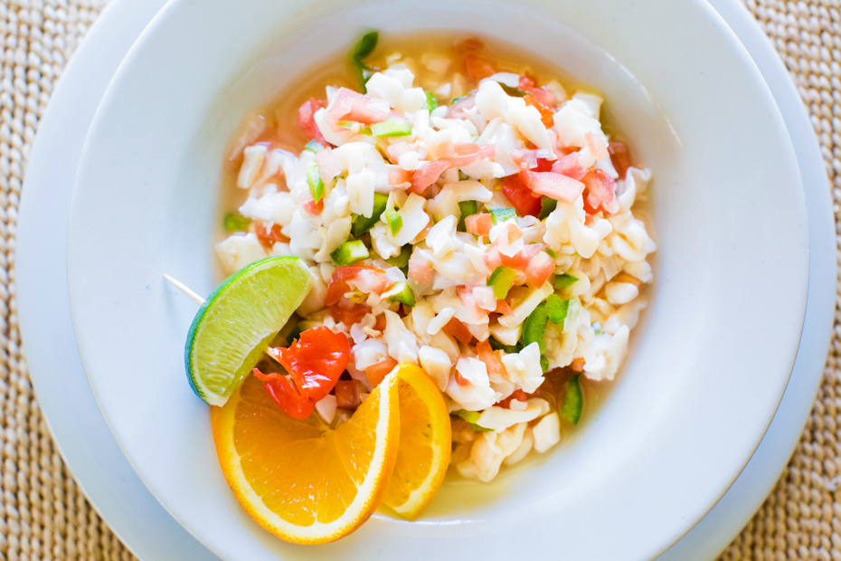

Conch Salad

Description
A Bahamian classic,
this citrus packed Conch Salad recipe is made with raw seafood and veggies,
and is perfect to serve as a chilled appetizer with a bit of a kick.
- Prep Time: 1 Hour
- Rest Time: Atleast 2 Hour
- Keeps for: 48 Hours in the fridge
Ingredients
- 1 Cup of lemon juice
- 1/2 Cup of Water
- 1/2 Cup of Lime
- 1/4 Cup of Vinegar
- 1.5 - 2 Pound of Conch
- 1 Large Green Pepper
- 4 Vine ripe Tomatoes
- Half medium sized sweet Onion
- 2 large Jalapeño
- 1 Blood-Orange or 1/2 Cup Mango Juice
- Pepper
- Adobe Seasoning
Optional
- Scotch Bonnet Pepper
- Salt - add this last as Adobe has salt already
Process
- Skin, clean and tenderize the pound of conch flesh. Cut the tenderized conch into cubes and strips
- Move conch meat to a bowl and cover with lemon juice. Rest in fridge for atleast an hour.
- Dice green pepper, and tomatoes into chewable chunks. Place into a large bowl that has a lid.
- Finely dice the half of sweet onion and jalopeños. I recommend a food processor for this. Place in the same bowl as the green peppers and tomatoes.
- Add the marinated conch meat to the bowl of diced veggies. Mix it all up.
- Squeeze as much juice as you can from the blood orange over the veggies and conch in the bowl.
- Pour the remaining water, lime, vinegar, and 1/4 of the lemon juice from the marinate into the bowl. Give it a nice stir to mix everything together.
- Add Pepper, Adobe seasoning to taste. Salt can be used as well just be aware Adobe contains salt already so dont be afraid to give it a taste first.
- If you want a bit of kick add some scotch bonnet to the dish. Less is more here.
- Allow to rest in the fridge for atleast a few hours. The longer it sits the better it will taste.